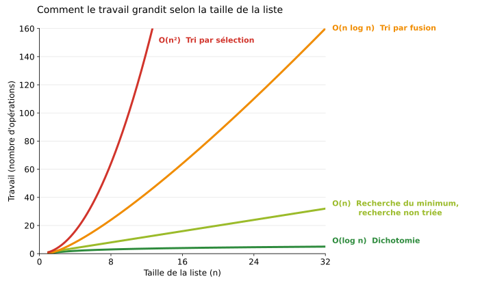

Chercher et trier : l'efficacité des algorithmes¶
1. Pourquoi mesurer l'efficacité ?¶
Deux algorithmes peuvent résoudre le même problème et donner le même résultat. Pourtant, l'un peut demander beaucoup moins de travail que l'autre.
Avec une liste de 10 nombres, la différence ne se voit pas. Avec une liste d'un million de nombres, elle peut se compter en secondes, en heures, voire en années.
Dans ce chapitre, nous étudions cinq algorithmes :
- la recherche du plus petit (ou du plus grand) nombre ;
- la recherche d'un nombre dans une liste non triée ;
- la recherche d'un nombre dans une liste triée (recherche dichotomique) ;
- le tri par sélection ;
- le tri par fusion.
Pour chacun, nous comptons le travail effectué, puis nous regardons comment ce travail grandit quand la liste grandit. Enfin, nous classons ces algorithmes selon la stratégie qu'ils utilisent.
2. Décrire un algorithme en français¶
Un algorithme est une suite d'étapes précises qui résout un problème. Nous le décrivons avec cinq rubriques.
| Rubrique | Contenu |
|---|---|
| PROBLÈME | Le problème en langage courant : « Nous disposons de… Nous recherchons… » |
| ENTRÉES | Les données dont l'algorithme a besoin |
| SORTIE | Le résultat que l'algorithme donne |
| PRINCIPE | L'idée de l'algorithme, en quelques phrases |
| ÉTAPES | La liste numérotée des actions à faire, dans l'ordre |
Pour chaque entrée et chaque sortie, on donne son nom, sa description et un exemple de valeur, écrit sous la forme nom = valeur. Par exemple :
- liste : une liste de nombres. Ex.
liste = [3, 5, 1, 6, 2] - valeur : le nombre recherché. Ex.
valeur = 5
Les étapes sont écrites en français, mais de façon précise. Nous utilisons toujours les mêmes tournures :
- « Pour chaque… » : répéter une action pour tous les éléments ;
- « Si…, alors… » : faire une action seulement si une condition est vraie ;
- « Recommencer à l'étape N tant que… » : répéter une partie de l'algorithme ;
- « Renvoyer… » : donner le résultat et s'arrêter.
À retenir
Une étape = une action. Chaque répétition doit dire quand elle s'arrête.
Attention
Les positions dans une liste commencent à 0. Dans la liste [7, 3, 9], le nombre 7 est à la position 0, le nombre 9 à la position 2.
3. Compter le travail¶
Pour comparer des algorithmes, nous ne mesurons pas le temps : il dépend de l'ordinateur. Nous comptons les opérations effectuées.
- Une comparaison : regarder deux nombres pour savoir lequel est le plus petit, ou s'ils sont égaux.
- Un échange : intervertir deux nombres dans une liste.
Le nombre d'opérations dépend souvent de la liste. Nous étudions le pire cas : la situation qui demande le plus de travail.
On note n le nombre d'éléments de la liste.
À retenir
Ce qui compte n'est pas le nombre exact d'opérations, mais comment il grandit. La bonne question est : « Si la liste est deux fois plus longue, combien de fois y a-t-il en plus de travail ? »
La complexité d'un algorithme indique comment son travail grandit quand la taille n de la liste grandit.
On l'écrit avec la notation O (on lit « grand O »). Par exemple :
- O(n) veut dire : « le travail grandit comme n ». Si la liste double, le travail double.
- O(n²) veut dire : « le travail grandit comme n × n ». Si la liste double, le travail est multiplié par 4.
La notation O ne garde que l'essentiel :
- elle oublie les petits termes : n − 1 comparaisons, c'est O(n) ;
- elle oublie les facteurs fixes : environ n × n / 2 comparaisons, c'est O(n²).
Pour chaque algorithme de ce chapitre, nous donnons sa complexité.
4. Recherche du minimum¶
PROBLÈME : Nous disposons d'une liste de nombres. Nous recherchons la position du plus petit nombre.
ENTRÉES :
- liste : une liste de nombres, non vide. Ex.
liste = [7, 3, 9, 2, 5]
SORTIE :
- position_min : la position du plus petit nombre. Ex.
position_min = 3
PRINCIPE : On parcourt la liste en retenant la position du plus petit nombre vu jusqu'ici. Chaque nouveau nombre est comparé à ce plus petit. S'il est encore plus petit, on retient sa position.
ÉTAPES :
- Retenir la position 0 comme position du plus petit nombre.
- Pour chaque position suivante, de 1 jusqu'à la dernière : comparer le nombre à cette position avec le plus petit nombre retenu. S'il est plus petit, alors retenir cette position.
- Renvoyer la position retenue.
Exemple avec la liste [7, 3, 9, 2, 5] :
| Position regardée | Nombre | Plus petit retenu (position) | Comparaison | Nouveau plus petit ? |
|---|---|---|---|---|
| départ | 7 | 7 (0) | — | — |
| 1 | 3 | 7 (0) | 3 < 7 ? | oui → 3 (1) |
| 2 | 9 | 3 (1) | 9 < 3 ? | non |
| 3 | 2 | 3 (1) | 2 < 3 ? | oui → 2 (3) |
| 4 | 5 | 2 (3) | 5 < 2 ? | non |
Résultat : position 3 (le nombre 2). Nombre de comparaisons : 4.
Recherche du maximum : c'est le même algorithme, en remplaçant « plus petit » par « plus grand ».
Travail : chaque nombre, sauf le premier, est comparé une fois. Pour une liste de n nombres, il faut toujours n − 1 comparaisons.
Que se passe-t-il si on double la longueur de la liste ?
| Taille de la liste | Comparaisons |
|---|---|
| 5 | 4 |
| 10 | 9 |
| 1 000 | 999 |
| 2 000 | 1 999 |
Quand la liste est deux fois plus longue, il y a environ 2 fois plus de comparaisons : on parle alors de complexité O(n), le travail grandit au même rythme que la liste.
5. Recherche dans une liste non triée¶
PROBLÈME : Nous disposons d'une liste de nombres, dans n'importe quel ordre, et d'un nombre cherché. Nous recherchons la position de ce nombre. S'il apparaît plusieurs fois, nous voulons la première position. S'il est absent, nous voulons −1.
ENTRÉES :
- liste : une liste de nombres. Ex.
liste = [8, 3, 6, 1, 9, 4] - valeur : le nombre recherché. Ex.
valeur = 9
SORTIE :
- position : la première position de valeur dans liste, ou −1 si elle est absente. Ex.
position = 4(avecvaleur = 7, on obtiendraitposition = -1)
PRINCIPE : On regarde les nombres un par un, depuis le début. Dès qu'on trouve le nombre cherché, on s'arrête. Si on arrive au bout sans le trouver, il est absent.
ÉTAPES :
- Pour chaque position, de 0 jusqu'à la dernière : si le nombre à cette position est égal à valeur, alors renvoyer cette position.
- Renvoyer −1.
Exemples avec la liste [8, 3, 6, 1, 9, 4] :
- On cherche 9 : on compare 8, 3, 6, 1, puis 9. Résultat : position 4, après 5 comparaisons.
- On cherche 7 : on compare les 6 nombres sans le trouver. Résultat : −1, après 6 comparaisons.
Travail : le pire cas arrive quand le nombre est à la fin ou absent. Il faut alors n comparaisons.
Que se passe-t-il si on double la longueur de la liste ?
| Taille de la liste | Comparaisons au pire |
|---|---|
| 6 | 6 |
| 12 | 12 |
| 1 000 | 1 000 |
| 2 000 | 2 000 |
Quand la liste est deux fois plus longue, il y a 2 fois plus de comparaisons : on parle alors de complexité O(n), le travail grandit au même rythme que la liste.
La liste n'est pas triée : un nombre peut être n'importe où. Il n'existe donc pas de raccourci, il faut tout regarder.
6. Recherche dans une liste triée : la dichotomie¶
L'intuition du dictionnaire¶
Pour chercher un mot dans un dictionnaire, personne ne lit toutes les pages depuis le début. On ouvre le dictionnaire vers le milieu, on regarde un mot, et on sait aussitôt si le mot cherché est avant ou après. On ne garde que la bonne moitié, et on recommence.
Cette méthode fonctionne parce que le dictionnaire est trié. Elle s'appelle la recherche dichotomique (« dichotomie » veut dire « couper en deux »).
PROBLÈME : Nous disposons d'une liste de nombres triée par ordre croissant et d'un nombre cherché. Nous recherchons une position de ce nombre dans la liste, ou −1 s'il est absent.
ENTRÉES :
- liste : une liste de nombres triée par ordre croissant. Ex.
liste = [2, 5, 8, 11, 14, 17, 20, 23, 26, 29, 32, 35, 38, 41, 44, 47] - valeur : le nombre recherché. Ex.
valeur = 47
SORTIE :
- position : une position de valeur dans liste, ou −1 si elle est absente. Ex.
position = 15
PRINCIPE : On garde en mémoire une zone de recherche, délimitée par une position de début et une position de fin. On regarde le nombre au milieu de la zone. S'il est égal au nombre cherché, c'est fini. S'il est plus petit, le nombre cherché ne peut être qu'à droite : on garde la moitié droite. S'il est plus grand, on garde la moitié gauche. Si la zone devient vide, le nombre est absent.
ÉTAPES :
- Retenir début = 0 et fin = la dernière position de la liste.
- Si début est plus grand que fin, alors la zone est vide : renvoyer −1.
- Calculer milieu = (début + fin) divisé par 2, arrondi à l'entier inférieur.
- Si le nombre à la position milieu est égal à valeur, alors renvoyer milieu.
- Si le nombre à la position milieu est plus petit que valeur, alors retenir début = milieu + 1 (on garde la moitié droite).
- Sinon, retenir fin = milieu − 1 (on garde la moitié gauche).
- Recommencer à l'étape 2.
Exemple : on cherche 47 dans cette liste de 16 nombres.
| Position | 0 | 1 | 2 | 3 | 4 | 5 | 6 | 7 | 8 | 9 | 10 | 11 | 12 | 13 | 14 | 15 |
|---|---|---|---|---|---|---|---|---|---|---|---|---|---|---|---|---|
| Nombre | 2 | 5 | 8 | 11 | 14 | 17 | 20 | 23 | 26 | 29 | 32 | 35 | 38 | 41 | 44 | 47 |
| Tour | début | fin | milieu | Nombre au milieu | Décision |
|---|---|---|---|---|---|
| 1 | 0 | 15 | 7 | 23 | 23 < 47 → début = 8 |
| 2 | 8 | 15 | 11 | 35 | 35 < 47 → début = 12 |
| 3 | 12 | 15 | 13 | 41 | 41 < 47 → début = 14 |
| 4 | 14 | 15 | 14 | 44 | 44 < 47 → début = 15 |
| 5 | 15 | 15 | 15 | 47 | trouvé → renvoyer 15 |
Résultat : position 15, après 5 nombres regardés. Une recherche dans une liste non triée aurait demandé 16 comparaisons.
La même recherche, vue comme un arbre. À chaque tour, on regarde le milieu, puis la zone est coupée en deux. On garde une moitié et on écarte l'autre.
[2 5 8 11 14 17 20 23 26 29 32 35 38 41 44 47] 16 nombres milieu : 23 < 47
├── [2 5 8 11 14 17 20] écartée
└── [26 29 32 35 38 41 44 47] 8 nombres milieu : 35 < 47
├── [26 29 32] écartée
└── [38 41 44 47] 4 nombres milieu : 41 < 47
├── [38] écartée
└── [44 47] 2 nombres milieu : 44 < 47
├── [ ] écartée (vide)
└── [47] 1 nombre milieu : 47, trouvé
On descend d'un étage à chaque tour. La taille de la zone est divisée par deux à chaque étage : 16 → 8 → 4 → 2 → 1.
Travail : le nombre de tours est le nombre d'étages de l'arbre. Pour 16 nombres, il y a 4 coupes, puis un dernier nombre à regarder : 5 nombres regardés au pire.
Que se passe-t-il si on double la longueur de la liste ? Avec 32 nombres, la première coupe donne une zone de 16 nombres : on se retrouve dans la situation précédente. L'arbre a simplement un étage de plus.
| Taille de la liste | Nombres regardés au pire |
|---|---|
| 16 | 5 |
| 32 | 6 |
| 1 000 | 10 |
| 2 000 | 11 |
| 1 000 000 | 20 |
| 2 000 000 | 21 |
Quand la liste est deux fois plus longue, il y a seulement une comparaison de plus : on parle alors de complexité O(log n) (on lit « logarithme de n »), le travail grandit comme le nombre de fois qu'on peut couper la liste en deux, c'est-à-dire le nombre d'étages de l'arbre (voir la section 11).
À retenir
Avec la dichotomie, si la liste est deux fois plus longue, il faut seulement un tour de plus. Mais elle ne fonctionne que si la liste est triée.
7. Le tri par sélection¶
La dichotomie est très rapide, à condition que la liste soit triée. Il faut donc savoir trier, et savoir combien cela coûte.
PROBLÈME : Nous disposons d'une liste de nombres dans n'importe quel ordre. Nous recherchons la même liste, triée par ordre croissant.
ENTRÉES :
- liste : une liste de nombres. Ex.
liste = [6, 2, 1, 5, 4, 3]
SORTIE :
- liste : la même liste, triée par ordre croissant. Ex.
liste = [1, 2, 3, 4, 5, 6]
PRINCIPE : On cherche le plus petit nombre de la liste et on le place en première position. Puis on cherche le plus petit parmi les nombres restants et on le place en deuxième position. Et ainsi de suite. C'est la recherche du minimum, répétée sur une partie de plus en plus petite de la liste.
ÉTAPES :
- Retenir la position courante = 0.
- Chercher la position du plus petit nombre parmi les nombres situés entre la position courante et la fin de la liste (recherche du minimum).
- Si cette position est différente de la position courante, alors échanger les deux nombres.
- Avancer la position courante de 1.
- Recommencer à l'étape 2 tant qu'il reste au moins deux nombres entre la position courante et la fin de la liste.
Attention
On n'échange qu'une fois par tour, après avoir trouvé le plus petit. On n'échange pas à chaque fois qu'on rencontre un nombre plus petit.
Exemple avec la liste [6, 2, 1, 5, 4, 3] :
| Liste avant le tour | Position courante | Recherche du minimum | Plus petit trouvé | Échange ? | Liste après le tour |
|---|---|---|---|---|---|
| [6, 2, 1, 5, 4, 3] | 0 | parmi 6 nombres : 5 comparaisons | 1 (position 2) | oui, 6 ↔ 1 | [1, 2, 6, 5, 4, 3] |
| [1, 2, 6, 5, 4, 3] | 1 | parmi 5 nombres : 4 comparaisons | 2 (position 1) | non | [1, 2, 6, 5, 4, 3] |
| [1, 2, 6, 5, 4, 3] | 2 | parmi 4 nombres : 3 comparaisons | 3 (position 5) | oui, 6 ↔ 3 | [1, 2, 3, 5, 4, 6] |
| [1, 2, 3, 5, 4, 6] | 3 | parmi 3 nombres : 2 comparaisons | 4 (position 4) | oui, 5 ↔ 4 | [1, 2, 3, 4, 5, 6] |
| [1, 2, 3, 4, 5, 6] | 4 | parmi 2 nombres : 1 comparaison | 5 (position 4) | non | [1, 2, 3, 4, 5, 6] |
Bilan : 15 comparaisons et 3 échanges.
Travail : le nombre de comparaisons ne dépend pas de l'ordre de départ. Pour n nombres, il vaut toujours :
(n − 1) + (n − 2) + … + 2 + 1
C'est la somme des entiers de 1 à n − 1, qui se calcule avec la formule :
n × (n − 1) / 2
Par exemple, pour 6 nombres : 6 × 5 / 2 = 15 comparaisons.
Que se passe-t-il si on double la longueur de la liste ?
| Taille de la liste | Comparaisons | Par rapport à la ligne du dessus |
|---|---|---|
| 6 | 15 | — |
| 12 | 66 | environ × 4 |
| 1 000 | 499 500 | — |
| 2 000 | 1 999 000 | environ × 4 |
Ce nombre vaut environ n × n / 2. Quand la liste est deux fois plus longue, il y a environ 4 fois plus de comparaisons : on parle alors de complexité O(n²), le travail grandit comme n × n. En effet, chaque tour est deux fois plus long, et il y a deux fois plus de tours.
À retenir
Le tri par sélection est simple, mais il devient très lent sur de grandes listes : doubler la liste multiplie le travail par 4.
8. Le tri par fusion¶
Fusionner deux listes triées¶
Le tri par fusion repose sur une opération simple : fusionner deux listes déjà triées pour obtenir une seule liste triée.
PROBLÈME : Nous disposons de deux listes triées par ordre croissant. Nous recherchons une seule liste triée qui contient tous leurs nombres.
ENTRÉES :
- gauche : une liste triée par ordre croissant. Ex.
gauche = [2, 5, 8] - droite : une liste triée par ordre croissant. Ex.
droite = [3, 4, 9]
SORTIE :
- resultat : une liste triée qui contient tous les nombres de gauche et de droite. Ex.
resultat = [2, 3, 4, 5, 8, 9]
PRINCIPE : Le plus petit nombre de chaque liste est son premier nombre. On compare les deux premiers, on prend le plus petit et on le place à la fin du résultat. On recommence jusqu'à ce qu'une des deux listes soit vide. Les nombres qui restent dans l'autre liste sont déjà dans l'ordre : on les ajoute à la fin.
ÉTAPES :
- Commencer avec une liste resultat vide.
- Comparer le premier nombre de gauche et le premier nombre de droite.
- Retirer le plus petit des deux de sa liste et l'ajouter à la fin de resultat. En cas d'égalité, prendre celui de gauche.
- Recommencer à l'étape 2 tant que gauche et droite contiennent encore des nombres.
- Ajouter à la fin de resultat les nombres qui restent, dans l'ordre.
- Renvoyer resultat.
Exemple : fusionner [2, 5, 8] et [3, 4, 9].
| gauche | droite | Comparaison | resultat |
|---|---|---|---|
| [2, 5, 8] | [3, 4, 9] | 2 ou 3 → 2 | [2] |
| [5, 8] | [3, 4, 9] | 5 ou 3 → 3 | [2, 3] |
| [5, 8] | [4, 9] | 5 ou 4 → 4 | [2, 3, 4] |
| [5, 8] | [9] | 5 ou 9 → 5 | [2, 3, 4, 5] |
| [8] | [9] | 8 ou 9 → 8 | [2, 3, 4, 5, 8] |
| [] | [9] | gauche est vide | [2, 3, 4, 5, 8, 9] |
Bilan : 5 comparaisons pour 6 nombres. Fusionner deux listes demande au plus une comparaison par nombre placé.
Trier en fusionnant¶
PROBLÈME : Nous disposons d'une liste de nombres dans n'importe quel ordre. Nous recherchons la même liste, triée par ordre croissant.
ENTRÉES :
- liste : une liste de nombres. Ex.
liste = [6, 2, 7, 1, 5, 8, 3, 4]
SORTIE :
- liste_triee : les mêmes nombres, triés par ordre croissant. Ex.
liste_triee = [1, 2, 3, 4, 5, 6, 7, 8]
PRINCIPE : Une liste d'un seul nombre est toujours triée. On sépare donc la liste en listes d'un seul nombre. Puis on les fusionne deux par deux : on obtient des listes triées de 2 nombres, puis de 4, puis de 8, jusqu'à n'avoir plus qu'une seule liste.
ÉTAPES :
- Séparer la liste en listes d'un seul nombre.
- Fusionner les listes deux par deux, dans l'ordre. Si une liste reste seule, la garder telle quelle pour le niveau suivant.
- Recommencer à l'étape 2 tant qu'il reste plus d'une liste.
- Renvoyer la liste qui reste.
Exemple avec la liste [6, 2, 7, 1, 5, 8, 3, 4] :
| Niveau | Listes | Comparaisons |
|---|---|---|
| Séparation | [6] [2] [7] [1] [5] [8] [3] [4] | — |
| 1 | [2, 6] [1, 7] [5, 8] [3, 4] | 4 fusions × 1 = 4 |
| 2 | [1, 2, 6, 7] [3, 4, 5, 8] | 3 + 2 = 5 |
| 3 | [1, 2, 3, 4, 5, 6, 7, 8] | 7 |
Bilan : 16 comparaisons. Le tri par sélection en demande 28 pour 8 nombres.
Exemple avec un nombre impair : la liste [5, 3, 8, 1, 9, 2, 6] contient 7 nombres. À certains niveaux, une liste reste seule : on la garde telle quelle pour le niveau suivant.
| Niveau | Listes | Comparaisons |
|---|---|---|
| Séparation | [5] [3] [8] [1] [9] [2] [6] | — |
| 1 | [3, 5] [1, 8] [2, 9] [6] | 1 + 1 + 1 = 3 ([6] reste seule) |
| 2 | [1, 3, 5, 8] [2, 6, 9] | 3 + 2 = 5 |
| 3 | [1, 2, 3, 5, 6, 8, 9] | 6 |
Bilan : 14 comparaisons et 3 niveaux, comme pour 8 nombres.
Travail :
- À chaque niveau, chaque nombre est placé une fois : au plus n comparaisons par niveau.
- Le nombre de niveaux est le nombre de fois qu'on peut couper la liste en deux, comme pour la dichotomie. Pour 8 nombres : 3 niveaux. Pour 1 000 nombres : environ 10.
- Au total : au plus n × nombre de niveaux comparaisons.
Que se passe-t-il si on double la longueur de la liste ? Il y a deux fois plus de nombres à placer à chaque niveau, et un seul niveau de plus.
| Taille de la liste | Niveaux | Comparaisons (au plus) | Par rapport à la ligne du dessus |
|---|---|---|---|
| 8 | 3 | 8 × 3 = 24 | — |
| 16 | 4 | 16 × 4 = 64 | environ × 2,7 |
| 1 000 | 10 | environ 10 000 | — |
| 2 000 | 11 | environ 22 000 | environ × 2,2 |
Quand la liste est deux fois plus longue, il y a un peu plus de 2 fois plus de comparaisons : on parle alors de complexité O(n log n), le travail grandit comme n (les nombres placés à chaque niveau) multiplié par log n (le nombre de niveaux). C'est beaucoup moins que le × 4 du tri par sélection.
Comparaison des deux tris :
| Taille de la liste | Sélection | Fusion (au plus) |
|---|---|---|
| 8 | 28 | 24 |
| 1 000 | 499 500 | environ 10 000 |
| 1 000 000 | environ 500 milliards | environ 20 millions |
À retenir
Sur une petite liste, les deux tris se valent. Sur une grande liste, le tri par fusion est des milliers de fois plus rapide.
9. Comparer les complexités¶
Voici les complexités rencontrées dans ce chapitre.
| Algorithme | Complexité | Si la liste double, le travail… |
|---|---|---|
| Recherche du minimum ou du maximum | O(n) | est multiplié par 2 |
| Recherche dans une liste non triée | O(n) | est multiplié par 2 |
| Recherche dichotomique | O(log n) | augmente de 1 tour |
| Tri par sélection | O(n²) | est multiplié par 4 |
| Tri par fusion | O(n log n) | est multiplié par un peu plus de 2 |
Ordre de grandeur du travail selon la taille de la liste :
| n | O(log n) | O(n) | O(n log n) | O(n²) |
|---|---|---|---|---|
| 8 | 3 | 8 | 24 | 64 |
| 16 | 4 | 16 | 64 | 256 |
| 1 000 | 10 | 1 000 | 10 000 | 1 000 000 |
| 1 000 000 | 20 | 1 000 000 | 20 000 000 | 1 000 000 000 000 |

Plus la courbe monte vite, plus l'algorithme devient lent quand la liste grandit. Le vert est le plus efficace, le rouge le moins efficace.
À retenir
Plus la liste est grande, plus le choix de l'algorithme compte. Un algorithme en O(n²) peut être utilisable sur 100 nombres et inutilisable sur un million.
Chercher ou trier d'abord ?
Trier une liste coûte au moins O(n log n). Cela ne vaut donc pas la peine pour une seule recherche : la recherche dans la liste non triée, en O(n), est moins chère. Mais si on doit chercher très souvent dans la même liste, on la trie une fois, puis chaque recherche ne coûte plus que O(log n).
10. Les stratégies d'algorithme¶
Face à un nouveau problème, on ne part pas de rien. Il existe quelques grandes façons de chercher un algorithme : on les appelle des stratégies. Les algorithmes de ce chapitre utilisent trois stratégies.
La force brute¶
Idée : examiner toutes les possibilités, une par une, sans chercher de raccourci.
- Recherche du minimum : on regarde tous les nombres.
- Recherche dans une liste non triée : on regarde les nombres un par un jusqu'à trouver le bon.
- Hors de ce chapitre : trouver un code à 4 chiffres en essayant 0000, 0001, 0002… jusqu'à 9999.
Avantage : c'est simple, et on est sûr de trouver la réponse si elle existe.
Inconvénient : c'est souvent lent. Pour le code à 4 chiffres, il faut jusqu'à 10 000 essais ; avec 8 chiffres, jusqu'à 100 millions.
L'approche gloutonne¶
Idée : à chaque étape, faire le choix qui paraît le meilleur maintenant, et ne jamais revenir dessus.
- Tri par sélection : à chaque tour, on prend le plus petit nombre restant et on le place définitivement. On ne le déplace plus jamais.
- Rendu de monnaie (section 12) : à chaque étape, on rend la plus grande pièce possible.
Avantage : c'est simple et souvent rapide.
Inconvénient : le meilleur choix du moment ne mène pas toujours à la meilleure solution. Par exemple, pour aller d'une ville à une autre, prendre à chaque carrefour la route la plus courte ne donne pas forcément le trajet le plus court.
Remarque
Pour le tri par sélection, l'approche gloutonne donne toujours le bon résultat : la liste est bien triée. Elle n'est simplement pas la plus rapide.
Diviser pour régner¶
Idée : couper le problème en problèmes plus petits du même type, les résoudre, puis combiner les résultats.
- Recherche dichotomique : on coupe la liste en deux et on ne garde que la moitié utile. Le problème devient deux fois plus petit à chaque tour.
- Tri par fusion : on coupe la liste jusqu'à obtenir des listes d'un seul nombre, déjà triées. Puis on combine ces petites listes en les fusionnant.
Avantage : c'est souvent beaucoup plus rapide. C'est là qu'apparaît le log n : c'est le nombre de fois qu'on peut couper le problème en deux.
Inconvénient : l'idée est moins naturelle, et l'algorithme est plus difficile à écrire.
Résumé¶
| Stratégie | Idée | Exemples du chapitre | Complexité |
|---|---|---|---|
| Force brute | Tout examiner | Recherche du minimum, recherche dans une liste non triée | O(n) |
| Gloutonne | Le meilleur choix maintenant, sans retour | Tri par sélection | O(n²) |
| Diviser pour régner | Couper en deux, résoudre, combiner | Dichotomie, tri par fusion | O(log n), O(n log n) |
À retenir
Une stratégie n'est pas un algorithme : c'est une façon de chercher un algorithme. Un même problème peut être résolu avec plusieurs stratégies. Pour trier, on peut choisir la sélection (gloutonne, O(n²)) ou la fusion (diviser pour régner, O(n log n)). Le choix de la stratégie change beaucoup l'efficacité.
11. Pour aller plus loin : le logarithme¶
Le logarithme en base 2 d'un nombre n, noté log₂ n, est le nombre de fois qu'on peut diviser n par 2 avant d'arriver à 1.
| n | Divisions par 2 | log₂ n |
|---|---|---|
| 8 | 8 → 4 → 2 → 1 | 3 |
| 16 | 16 → 8 → 4 → 2 → 1 | 4 |
| 1 024 | 1 024 → 512 → … → 1 | 10 |
| 1 000 000 | environ 20 divisions | environ 20 |
C'est l'opération inverse de la puissance de 2 : 2 × 2 × 2 = 8, donc log₂ 8 = 3.
Le logarithme apparaît dès qu'un algorithme coupe le problème en deux à chaque étape : c'est le cas de la dichotomie (le nombre de tours) et du tri par fusion (le nombre de niveaux).
Dans la notation O, on n'écrit pas la base : on note simplement O(log n).
12. Exercice sur la stratégie gloutonne : le rendu de monnaie¶
Un caissier doit rendre de la monnaie. Il veut rendre le montant exact avec le moins de pièces et de billets possible. Une idée simple : rendre à chaque fois la plus grande pièce possible. C'est une approche gloutonne (section 10).
PROBLÈME : Nous disposons d'un système de monnaie (les valeurs des pièces et des billets) et d'un montant à rendre. Nous recherchons les pièces et billets à rendre.
ENTRÉES :
- systeme : la liste des valeurs des pièces et billets disponibles. Ex.
systeme = [50, 20, 10, 5, 2, 1] - montant : le montant à rendre. Ex.
montant = 38
SORTIE :
- rendu : la liste des pièces et billets à rendre, ou « impossible » si on ne peut pas rendre le montant exact. Ex.
rendu = [20, 10, 5, 2, 1]
PRINCIPE : On commence par la plus grande valeur. Tant qu'elle ne dépasse pas le montant restant, on la rend et on la retire du montant. Quand elle dépasse, on passe à la valeur suivante, plus petite. À la fin, si le montant restant vaut 0, on a réussi.
ÉTAPES :
- Ranger les valeurs de systeme de la plus grande à la plus petite. Retenir rendu = une liste vide.
- Prendre la plus grande valeur.
- Si cette valeur est plus petite ou égale au montant restant, alors l'ajouter à rendu, la soustraire du montant restant et recommencer à l'étape 3.
- Sinon, passer à la valeur suivante. Recommencer à l'étape 3 tant qu'il reste des valeurs.
- Si le montant restant vaut 0, alors renvoyer rendu. Sinon, renvoyer « impossible ».
Exemple avec systeme = [50, 20, 10, 5, 2, 1] et montant = 38 :
| Valeur | Montant restant | Décision | rendu |
|---|---|---|---|
| 50 | 38 | 50 > 38 → valeur suivante | [] |
| 20 | 38 | on rend 20 → reste 18 | [20] |
| 20 | 18 | 20 > 18 → valeur suivante | [20] |
| 10 | 18 | on rend 10 → reste 8 | [20, 10] |
| 5 | 8 | on rend 5 → reste 3 | [20, 10, 5] |
| 2 | 3 | on rend 2 → reste 1 | [20, 10, 5, 2] |
| 1 | 1 | on rend 1 → reste 0 | [20, 10, 5, 2, 1] |
Résultat : rendu = [20, 10, 5, 2, 1], soit 5 pièces et billets.
À vous¶
- Appliquez l'algorithme avec
systeme = [50, 20, 10, 5, 2, 1]etmontant = 67. Écrivez le tableau, puis le résultat. - Recherche : l'approche gloutonne ne donne pas toujours la meilleure solution. Trouvez un système de monnaie et un montant pour lesquels l'algorithme rend plus de pièces que nécessaire. Piste : essayez un système de 3 pièces seulement.
- Recherche : trouvez un système et un montant pour lesquels l'algorithme répond « impossible », alors qu'une solution existe.
- Recherche : trouvez un système et un montant pour lesquels aucune solution n'existe.
- Avec les pièces et billets suisses, ces problèmes n'arrivent pas. À votre avis, pourquoi ?